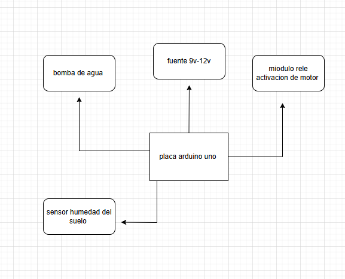

Diseño del Sistema
A continuación, se presenta un diagrama de bloques que muestra los principales componentes de la huerta automática, así como sus interconexiones:

El sistema se compone de:
- Sensores: Humedad del suelo, temperatura/humedad (DHT11/DHT22), lluvia, luz (LDR), nivel de agua.
- Controlador: Arduino o microcontrolador que procesa las señales de los sensores.
- Actuadores: Bomba de agua, ventiladores, sistema de iluminación.
- Aplicación Web: Para visualizar datos en tiempo real y controlar el sistema de manera remota.